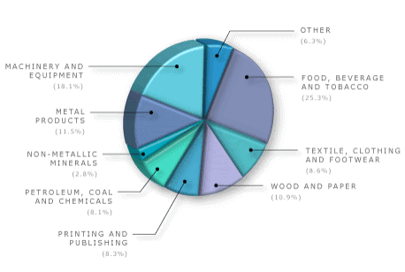
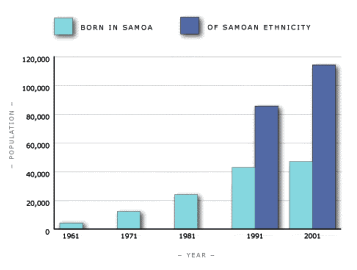

| WELCOME | USER GUIDE | SLIDE 1 | SLIDE 2 | SLIDE 3 | SLIDE 4 | SLIDE 5 | BACKGROUND |
1973The National Party prime minister between 1975 and 1984 was Robert Muldoon, a controversial figure whose policies and abrasive style polarised New Zealanders. TVNZ Television Archive http://www.teara.govt.nz/NewZealandInBrief/History/6/ENZ-Resources/Standard/1/2/en#breadcrumbtop BakeryEmployment by industry type, 2001

New Zealand Official Yearbook, 2002 This chart shows the percentage of workers (calculated as full-time equivalent persons) employed in the different kinds of manufacturing in New Zealand in 2001. Over a quarter of industrial workers were employed in the food, tobacco and beverage manufacturing industries. http://www.teara.govt.nz/NewZealandInBrief/Economy/8/ENZ-Resources/Standard/3/en PayDistribution of disposable income 1982 and 1996
Statistics New Zealand Household Survey This table shows the proportion of disposable income held by all households in 1982 and 1996. It suggests that the bottom half of all households had considerably less of the disposable income in 1996 than 14 years before (31.1% as compared with 27.8%). Conversely, the top 10% of households saw their share of the disposable income rise from about a fifth to over a quarter. NZSamoan population in New Zealand, 1961–2001

New Zealand census, 1961–2001 Until the 1970s, New Zealand’s immigration policies and practices favoured immigrants from Britain. Most New Zealanders were of British birth or descent. When immigration policies were changed from the 1970s to eliminate race or national origins as criteria for entry, large numbers of people arrived from many different countries. This graph shows the rapid increase in the Samoan population in New Zealand from 1961, and the increasing numbers of those with Samoan ethnicity who are New Zealand-born. Figures for ethnicity are only available from 1991. http://www.teara.govt.nz/NewZealandInBrief/History/6/ENZ-Resources/Standard/5/en SamoaIn the 1970s Samoans worked successfully in Auckland factories and were well regarded by their bosses, as this picture suggests. However they were badly hit by the downturn in industrial production which followed the freeing up of tariffs in the late 1980s. Their levels of unemployment were higher and their incomes lower than those for New Zealanders generally. New Zealand Herald http://www.teara.govt.nz/NewZealanders/NewZealandPeoples/Samoans/1/ENZ-Resources/Standard/8/en |